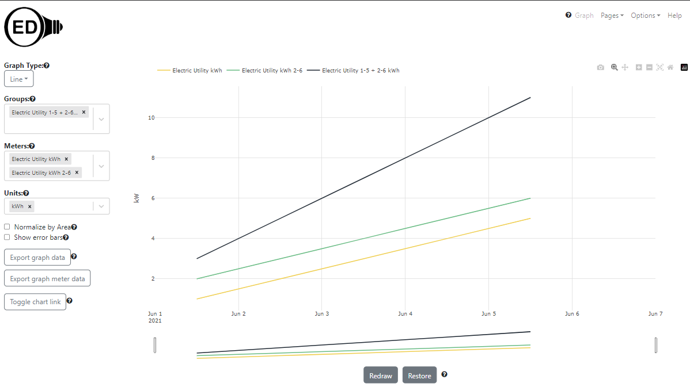
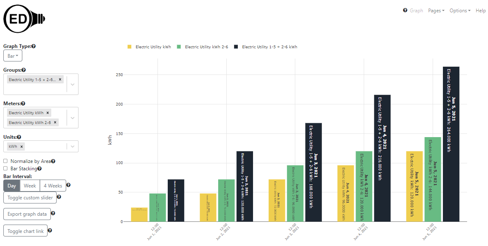
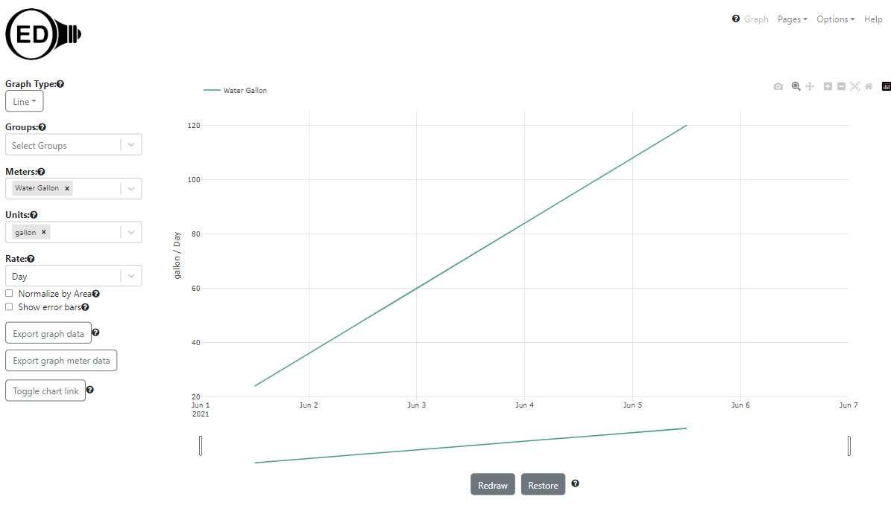
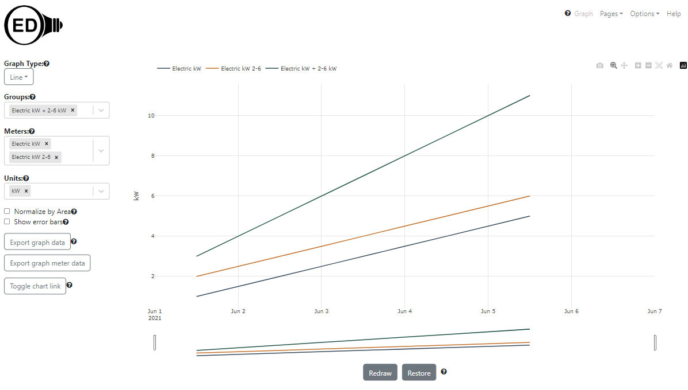
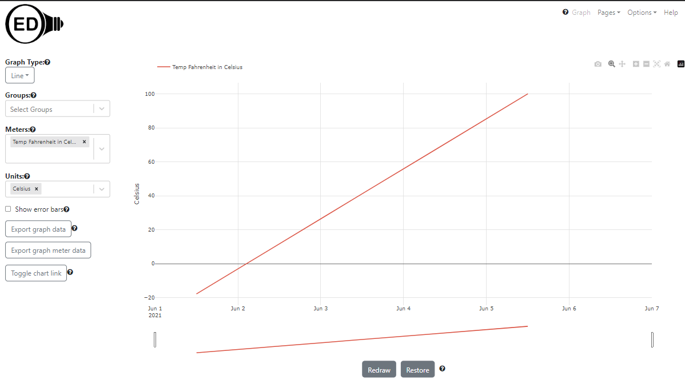
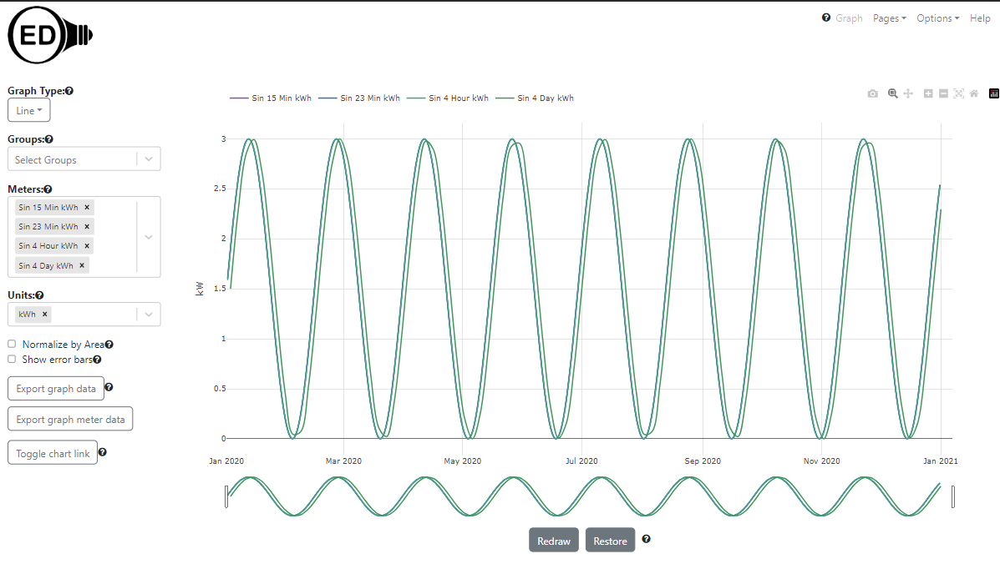
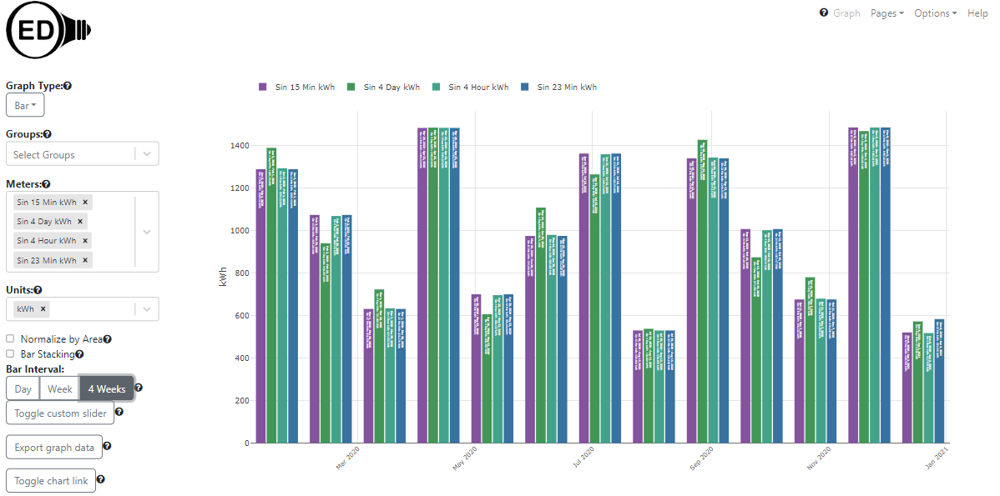
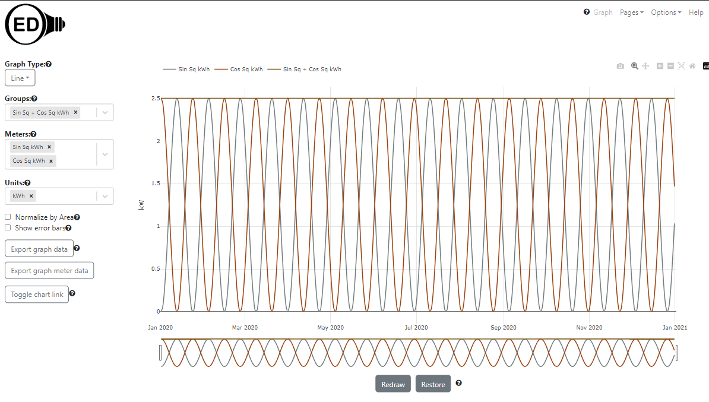
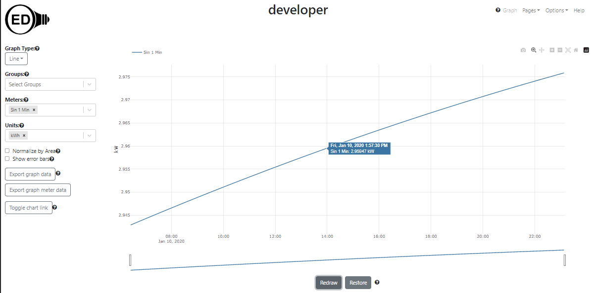

Developers want to have test meter data for OED development that is consistent, stable and does not require having access to actual meters. This describes how to get and load such meter test data.
The comparison graphic in OED uses the current time to compare usage over a given period to the same period shifted by that same period in the past. Since the test data has static dates, they will not include dates near the current time. This means that you cannot see comparison data. We will be posting directions to import test data that will allow comparison graphs.
For using the following data with maps, please see the test map page.
What follows assumes you have a properly installed and working OED but have not yet loaded in the reading data described here. If they have already been loaded then the loading step for that meter will be skipped. At a minimum you should be able to see the main OED page in a web browser (normally URL of localhost:3000). Normally the database is automatically created and works fine. If you get errors about the database then you need to address them before you can do this or get the test data in (if you get errors during this process).
The import of this data into OED uses the CSV import feature that is described in the CSV import help and pages linked from that page, esp. about readings. You do not need to know all those details but can get further information as needed.
The simple and mathematical test data is created in OED by doing the following (they are described next):
npm run testData. This may take a few minutes but when it
completes there should be new meters with data, new groups, the DB structures are all updated and the CSV
files used
will be removed unless there was an error. This generates all
the standard test data except the one where readings are every minute since that is a large dataset that is
less frequently used. See the next step before you
can use the new OED information within the OED web page.If you only want to load some of the data (not the common usage), you can look at package.json for the individual commands to insert the mathematical data. The others are so small/fast that they are done as above.
The simple/basic test data is not representative of real meter data nor mathematical but it is easy to use. Each meter has readings for five days from June 1-5, 2021. All the line graphs should be a straight line where value go 1-5 unless otherwise noted in the name. The meters and units are based on the simplified example in the Resource Generalization document with the addition of kW (flow data) and Fahrenheit/Celsius (raw data). The following table gives the expected values for the line graphs for all units for these simple meters where NA indicates that unit is not allowed. The item for each meter/row that is marked with a * indicated the default graphic unit if one is not already selected. Note that the temperature data will not be a straight line unless viewed as raw data when graphed. It will vary modestly from that with daily points. Also, a meter without a unit cannot be graphed and OED switches the displayable to false in this case. The meter "Electric Utility kWh not displayable" can only be seen if logged in as an admin. Note kW and kWh are not impacted by a rate change. The Gallon and Gallon flow are so available for testing the rate choices.
| Meter name | kWh | BTU | MJ | M3 Gas | 100 W bulb | US Dollar | Euro | kg | Metric ton | kg of CO2 | Metric ton of CO2 | Fahrenheit | Celsius | kW | Gallon | Liter | Gallon per minute | Liter per hour |
|---|---|---|---|---|---|---|---|---|---|---|---|---|---|---|---|---|---|---|
| Electric Utility kWh | 1 - 5* | 3412.08 - 17060.4 | 3.6 - 18 | 9.36e-2 - 0.468 | 1-5 | 0.115 - 0.575 | 0.1012 - 0.506 | NA | NA | 0.709 - 3.545 | 7.09e-4 - 3.545e-3 | NA | NA | NA | NA | NA | NA | NA |
| Electric Utility kWh not displayable | 1 - 5* | 3412.08 - 17060.4 | 3.6 - 18 | 9.36e-2 - 0.468 | 1-5 | 0.115 - 0.575 | 0.1012 - 0.506 | NA | NA | 0.709 - 3.545 | 7.09e-4 - 3.545e-3 | NA | NA | NA | NA | NA | NA | NA |
| Electric Utility kWh 2-6 | 2 - 6* | 6824.16 - 20472.48 | 7.2 - 21.6 | 0.1872 - 0.5616 | 2 - 6 | 0.23 - 0.69 | 0.2 - 0.6 | NA | NA | 1.418 - 4.254 | 1.418e-3 - 4.254e-3 | NA | NA | NA | NA | NA | NA | NA |
| Electric Utility kWh in BTU | 1 - 5 | 3412.08 - 17060.4* | 3.6 - 18 | 9.36e-2 - 0.468 | 1-5 | 0.115 - 0.575 | 0.1012 - 0.506 | NA | NA | 0.709 - 3.545 | 7.09e-4 - 3.545e-3 | NA | NA | NA | NA | NA | NA | NA |
| Electric Utility kWh in MTon CO2 | 1 - 5 | 3412.08 - 17060.4* | 3.6 - 18 | 9.36e-2 - 0.468 | 1-5 | 0.115 - 0.575 | 0.1012 - 0.506 | NA | NA | 0.709 - 3.545 | 7.09e-4 - 3.545e-3* | NA | NA | NA | NA | NA | NA | NA |
| Electric Utility no unit | NA | NA | NA | NA | NA | NA | NA | NA | NA | NA | NA | NA | NA | NA | NA | NA | NA | NA |
| Natural Gas BTU | 2.93e-4 - 1.465e-3 | 1 - 5* | 1.06e-3 - 5.27e-3 | 2.74e-5 - 1.37e-4 | 2.93e-4 - 1.465e-3 | 2.95e-6 - 1.48e-5 | 2.6e-6 - 1.3e-5 | NA | NA | 5.28e-5 - 2.64e-4 | 5.28e-8 - 2.64e-7 | NA | NA | NA | NA | NA | NA | NA |
| Natural Gas BTU in Dollar | 2.93e-4 - 1.465e-3 | 1 - 5 | 1.06e-3 - 5.27e-3 | 2.74e-5 - 1.37e-4 | 2.93e-4 - 1.465e-3 | 2.95e-6 - 1.48e-5* | 2.6e-6 - 1.3e-5 | NA | NA | 5.28e-5 - 2.64e-4 | 5.28e-8 - 2.64e-7 | NA | NA | NA | NA | NA | NA | NA |
| Natural Gas Dollar | NA | NA | NA | NA | NA | 1 - 5* | 0.88-4.4 | NA | NA | NA | NA | NA | NA | NA | NA | NA | NA | NA |
| Natural Gas Cubic Meters | 10.7 - 53.4 | 3.64e4 - 1.82e5 | 38.5 - 192.3 | 1 - 5* | 10.7 - 53.4 | 0.11 - 0.55 | 0.97 - 4.84 | NA | NA | NA | NA | NA | NA | NA | NA | NA | NA | NA |
| Trash Kg | NA | NA | NA | NA | NA | NA | NA | 1 - 5* | 1e-3 - 5e-3 | NA | NA | NA | NA | NA | NA | NA | NA | NA |
| Temp Fahrenheit 0-212 | NA | NA | NA | NA | NA | NA | NA | NA | NA | NA | NA | 0 - 212* | -17.78 - 100 | NA | NA | NA | NA | NA |
| Temp Fahrenheit in Celsius | NA | NA | NA | NA | NA | NA | NA | NA | NA | NA | NA | 0 - 212 | -17.78 - 100* | NA | NA | NA | NA | NA |
| Electric kW | NA | NA | NA | NA | NA | NA | NA | NA | NA | NA | NA | NA | NA | 1 - 5* | NA | NA | NA | NA |
| Electric kW 2-6 | NA | NA | NA | NA | NA | NA | NA | NA | NA | NA | NA | NA | NA | 2 - 6* | NA | NA | NA | NA |
| Water Gallon | NA | NA | NA | NA | NA | NA | NA | NA | NA | NA | NA | NA | NA | NA | 1-5* | 3.79-18.93 | NA | NA |
| Water Gallon flow 1-5 per minute | NA | NA | NA | NA | NA | NA | NA | NA | NA | NA | NA | NA | NA | NA | NA | NA | 1-5* | 227.12-1135.6 |
For bar graphs, you can easily check both day and 4-week bars. The 1-week bar is a little strange because the 5 days cross a week boundary so the first day (June 1) is the only day in the May 26-June 1, 2021 bar and the other four days are in the June 2-8, 2021. The values are correct when this is considered. Back to the 1-day bar graph. The value can be found by taking the day value on the line graph (shown in the table above) and multiplying by 24. For example, Electric Utility kWh as kWh has line values of 1-5 and bar values of 24-120. In US Dollars it is 0.115 - 0.575 on line and 2.76-13.8 on bar. This holds for both quantity and flow units. For raw units, it does not make sense to do a bar graph. For example, what is the total temperature over time (not a good question). For the 4-week bar, it is the sum of the 5 daily bars. For example, the Electric Utility kWh as kWh has 1-day bar values of 24, 24, 72, 96, 120 which sums to 360 and is the 4-week bar value.
The following table gives groups that are created from the meters above as well as the mathematical meter data described below.
| Group name | Default graphic unit | Values for default unit | Included meters | Included groups | All meters included | Compatible units | Note |
|---|---|---|---|---|---|---|---|
| Electric Utility 1-5 + 2-6 kWh | kWh | 3 - 11 | Electric Utility kWh, Electric Utility kWh 2-6 | none | Electric Utility kWh, Electric Utility kWh 2-6 | see Electric Utility kWh | |
| Electric Utility 1-5 + 2-6 Dollar | US Dollar | 0.345 - 1.265 | Electric Utility kWh, Electric Utility kWh 2-6 | none | Electric Utility kWh, Electric Utility kWh 2-6 | see Electric Utility kWh | |
| Natural Gas Dollar Euro | Euro | 0.88 - 4.4 | Natural Gas Dollar | none | Natural Gas Dollar | see Natural Gas Dollar | |
| Electric Utility 1-5 + Natural Gas Dollar Euro | Euro | 0.9812 - 4.906 | Electric Utility kWh, Natural Gas Dollar | none | Electric Utility kWh, Natural Gas Dollar | see Natural Gas Dollar | |
| Electric Utility 1-5 kWh not displayable | kWh | 1 - 5 | Electric Utility kWh | none | Electric Utility kWh | see Electric Utility kWh | |
| Electric kW + 2-6 kW | kW | 3 - 11 | Electric kW, Electric kW 2-6 | none | Electric kW, Electric kW 2-6 | see Electric Utility kWh | This should only been seen and graphable by an admin |
| SqSin + SqCos kWh | kWh | constant 2.5 | testSqSin kWh, testSqCos kWh | none | testSqSin kWh, testSqCos kWh | see Electric Utility kWh | |
| SqSin + SqCos no unit | none | cannot graph | testSqSin kWh, testSqCos kWh | none | testSqSin kWh, testSqCos kWh | see Electric Utility kWh | Will graph once a unit compatible with kWh is chosen |
| Amp 1 + 5 kWh | kWh | sine from 0-6 | testAmp1Sin kWh, testAmp5Sin kWh | none | testAmp1Sin kWh, testAmp5Sin kWh | see Electric Utility kWh | |
| Amp 2 + 6 kWh | kWh | sine from 0-8 | testAmp2Sin kWh, testAmp6Sin kWh | none | testAmp2Sin kWh, testAmp6Sin kWh | see Electric Utility kWh | |
| Amp 3 + 4 kWh | kWh | sine from 0-7 | testAmp3Sin kWh, testAmp4Sin kWh | none | testAmp3Sin kWh, testAmp4Sin kWh | see Electric Utility kWh | |
| Amp 2 + (1 + 5) kWh | kWh | sine from 0-8 | testAmp2Sin kWh | Amp 1 + 5 kWh | testAmp1Sin kWh, testAmp2Sin kWh, testAmp5Sin kWh | see Electric Utility kWh | |
| Amp 3 + 6 + (2 + (1 + 5)) + (3 + 4) kWh | kWh | sine from 0-21 | testAmp3Sin kWh, testAmp6Sin kWh | Amp 2 + (1 + 5) kWh, Amp 3 + 4 kWh | testAmp1Sin kWh, testAmp2Sin kWh, testAmp3Sin kWh, testAmp4Sin kWh, testAmp5Sin kWh, testAmp6Sin kWh | see Electric Utility kWh | testAmp3Sin included twice but not double counted by OED |
| Amp 6 + 7 + (1 + 5) + (2 + 6) + (3 + 4) kWh' | kWh | sine from 0-28 | testAmp6Sin kWh, testAmp7Sin kWh | Amp 1 + 5 kWh, Amp 2 + 6 kWh, Amp 3 + 4 kWh | testAmp1Sin kWh, testAmp2Sin kWh, testAmp3Sin kWh, testAmp4Sin kWh, testAmp5Sin kWh, testAmp6Sin kWh, testAmp7Sin kWh | see Electric Utility kWh | testAmp6Sin included twice but not double counted by OED |
The OED test data generation code can generate sine and cosine based data. It has several advantages:
Note that the values are shifted so the minimum is 0 since most meter data is like that. It is easy to use this data by following these steps
The following table gives a list of the available data and information about it. The meter name assumes you use
the provided script to load the data. (If you want to generate the test data outside the usual script, the
<command name> is what you use to create this dataset manually with
npm run <command name> in a web/vsc Docker container terminal. You will then need to
load
the reading data into OED as described on the reading import
page. The file will have the name indicated and is located in the
src/server/test/db/data/automatedTests/ directory.)
| Description | Meter name | # points/file size |
|
File produced |
|---|---|---|---|---|
| Sine function with a period of 45 days and amplitude 3 for 1 year with points every 4 days | test4DaySin | 92 points/5kB | generateFourDayTestingData | fourDayFreqTestData.csv |
| Sine function with a period of 45 days and amplitude 3 for 1 year with points every 4 hours | test4HourSin | 2196 points/129kB | generateFourHourTestingData | fourHourFreqTestData.csv |
| Sine function with a period of 45 days and amplitude 3 for 1 year with points every 23 minutes | test23MinSin | 22915 points/1.4MB | generateTwentyThreeMinuteTestingData | twentyThreeMinuteFreqTestData.csv. |
| Sine function with a period of 45 days and amplitude 3 for 1 year with points every 15 minutes | test15MinSin | 35136 points/2.1MB | generateFifteenMinuteTestingData | fifteenMinuteFreqTestData.csv |
| Cosine function with a period of 45 days and amplitude 3 for 1 year with points every 23 minutes | test23MinCos | 22915 points/1.4MB | generateCosineTestingData | 23FreqCosineTestData.csv |
| Sine squared function with a period of 45 days and amplitude 2.5 for 1 year with points every 1 day | testSqSin | 366 points/21kB | generateSineSquaredTestingData | 2.5AmpSineSquaredTestData.csv |
| Cosine squared function with a period of 45 days and amplitude 2.5 for 1 year with points every 1 day | testSqCos | 366 points/21kB | generateCosineSquaredTestingData | 2.5AmpCosineSquaredTestData.csv |
| Sine function with a period of 45 days and amplitudes 1-7 for 2 years with points every 15 minutes | testAmp1Sin, testAmp2Sin, ... | 70176 points/4.2MB each; 29.4MB total | generateVariableAmplitudeTestingData | 15Freq1AmpSineTestData.csv, 15Freq2AmpSineTestData.csv, ... |
| Sine function with a period of 45 days and amplitude 3 for 1 year with points every 1 minute. This is normally used for specialized testing of a large number of readings and not automatically generated by the script. | test1MinSin | 527040 points/32MB | generateOneMinuteTestingData | oneMinuteFreqTestData.csv |
The following figure shows the kWh meters and groups as a line graph:
The following figure shows the kWh meters and groups as a 4 week bar graph:

Same as above but as a 1 week bar graph:

Same as above but as a 1 day bar graph:
Same as the line graphic above but in kg of CO2 to show changing the unit:

Same as above but as a 1 day bar graph:

The following figure shows the water meter as a line graph where the rate is Hour to show changing the rate and a different type of unit. Note KWh must be shown per hour.
The following figure shows the kW meters and groups as a line graph:
The following figure shows the kW meters and groups as a 4 week bar graph:

The following figure shows the water flow meter as a line graph where the rate is Hour to show changing the rate and a different type of unit. Note kW must be shown per hour.

The following figure shows a temperature meter that collects in Fahrenheit but has a default graphic unit of Celsius as a line graph:
he following picture shows the meters test4DaySin, test4HourSin,
test23MinSin & test15MinSine. It is designed to
show how the number of points impact the line quality in OED and verify that varied reading rates do not impact
the OED code. What you see is that the 4 day line is stair step because each group of 4 day points have the same
value. The other meters are very similar in value. This shows that the daily averaging in OED is accurate. Note
that in this and all line graphics, you will see the same value as you zoom in to see hourly or even minute
level points. This is because the data is kW. The only change you will see is in the quality of the graphic if
you zoom in so tight that you have limited points to graph.

The following picture shows the same meters as above but as a bar graph with 4 week bars. In a perfect world, all
the bars would have the same value for a given date range. As can be seen, there are small differences where the
value varies more as the frequency of the readings goes down. This variation is due to the inaccuracy of low
frequency readings as is normal. Note the last set of bars varies more due to a known issue in how the bar
lengths are created.

The following picture shows a line graphic of the sin values for the 7 different amplitudes (1-7). As expected,
they have the same period with a different amplitude. Plus, it looks nice!
The following picture is the same meters as above but for a bar graphic of 1 day that is stacked. It shows some
stair step features due to only having one bar per day but has the same shape as the line graphic. Plus, it also
looks nice!
The following picture shows a line graphic of a group containing all the sine amplitudes above but with 6
included twice. OED does not duplicate the values so the sum is a maximum of 28 or 1 + 2 + ... + 7 = 7 * 8 /
2.

The following picture shows a sin and cos with the same amplitude. It should be noted that normally sin and cos
and phase shifted so the high of one is the low of the other. You do not see that because the values were
shifted to all be positive.

The following picture shows the meters testSqSin & testSqCos along with a group containing both meters (c2s2). If
OED is working properly then the group should have a constant value since sin^2 + cos^1 = 1 or the value of the
amplitude in this case. This is a good test of whether groups work (for simple groups of only two meters). If
you want to see how accurate OED is then just graph this group and you will see that the value is always 2.5.
Note it graphs the group without a unit and that was okay because it was chosen after the meters so it uses the
unit of the meters.

The following image shows sin with readings every minute. It is a very high quality version of the first picture
with points that are less frequent. It is zoomed in to a couple of days and the hover shows it is then every
minute.This data is not automatically generated and is normally only used to test
OED's speed when there is lots of reading points.

This data can show what happens with actual data. However, it is harder to see when things are off. It is provided as an alternative to the mathematical data but will probably be used less now that that data exists.
The table below lists the types of test data we have. The first four all have 3.5 years of electric data but for different meters so the values vary. The last one is a sample file that you can edit to create your own data.
| Description | Readings CSV | Size of Readings File |
|---|---|---|
| Contains actual electric data on an hourly basis for about 3.5 years (Oct. 2016-Apr. 2020) | threeYearA.csv | 1.3MB |
| Contains actual electric data on an hourly basis for about 3.5 years (Oct. 2016-Apr. 2020) | threeYearB.csv | 1.3MB |
| Contains actual electric data on an hourly basis for about 3.5 years (Oct. 2016-Apr. 2020) | threeYearC.csv | 1.3MB |
| Contains actual electric data on an hourly basis for about 3.5 years (Oct. 2016-Apr. 2020) | threeYearD.csv | 1.3MB |
| Sample file to edit for your own data | sampleReadings.csv | 0 MB |
Choose the file you want where clicking on the link in a web browser will download that file. Note you can load as many test data files as you want into a single OED instance.
You will want to have OED running during this process. Start it with Docker as you should have previously done. Log in as an admin user. Go to the CSV upload page using the "CSV" button in the top, right of the OED web page. You should default to the "Readings" tab which is what you want. Now do the following:
npm run updateCikAndViews in a terminal in the web container. Then you need to refresh the web
page with OED.
Below is a line graphic with the four 3.5 year meters. If all went well then this is what you should see.

If you don't see this then something is wrong and you should not continue this process and instead ask us for help. (See link at bottom of page)
When you do a compare graph, you choose how far from current time you compare. As a result, you need current readings and ones immediately before that time to get data for the comparison graph. If you are using meter data that does not have this, you will need to create it. Here is how to do it:
date +%Z. For what
follows the timezone is assumed to be CDT but you should change if your timezone differs.name,ipaddress,enabled,displayable,meter_type,default_timezone_meter,gps,identifier compare 1,,FALSE,TRUE,other,,,compare 1 compare 2,,FALSE,TRUE,other,,,compare 2You can then import this CSV meter file (assuming you have OED running and have the default admin user) with:
curl localhost:3000/api/csv/meters -X POST -F 'headerRow=true' -F 'gzip=false' -F 'email=test@example.com' -F 'password=password' -F 'csvfile=@compareMeters.csv'.
psql -U oed to access the database terminal. You can then do the following steps within this
terminal.
select clock_timestamp() at time zone 'cdt';
insert into readings (meter_id, reading, start_timestamp, end_timestamp) (select M.id, R.reading, R.start_timestamp, R.end_timestamp from meters as M, readings as R where M.name = 'compare 1' and R.meter_id = (select id from meters where name = 'Meter 1') and R.end_timestamp > '2019-12-31' and R.start_timestamp < '2020-04-01');
select date_trunc('hour', clock_timestamp() at time zone 'cdt') - max(end_timestamp) as shift from readings where meter_id = (select id from meters where name = 'compare 1');
where you can replace cdt with the appropriate timezone you used above. This will give
the time
shift needed so the date of the last end_timestamp is nearest to current hour.
update readings set start_timestamp = start_timestamp + interval '509 days 10:00:00', end_timestamp = end_timestamp + interval '509 days 10:00:00' where meter_id in (select id from meters where name in ('compare 1'));.
You can repeat this step, properly edited, for other meters where the time shift will be the same.
You can
also add comma separated meters to the "in" list in the SQL command.\qnpm run refreshAllReadingViews. You will need to visit the meters
page or refresh the web page in order the see the new meters. delete from readings where meter_id in (select id from meters where name in ('compare 1'));
and then start again from above to add values and then do the shift (do not need to recreate the meter).
Note you can edit the list of meters in the "in" list to the actual compare meters you have (comma
separated) if you want to delete multiple meters' readings. You can download the sample data from the table above. You can edit the sampleReadings.csv file by opening it in you preferred editor where a spreadsheet program is fine as long as you make sure to save it as a CSV file. Remove the two sample readings on lines 2 and 3 of the file and create new lines with the data you want. Note that normally the end time of the previous point is equal to the start time of the next point in real meter data. You can put in as many lines as you want with readings. Please note that if you don't put in readings for a meter then you may get unexpected results when you graph that meter in OED. This file has a header row so it is easier to see what goes in each column. Once you are done editing and save the file in CSV format, import it the same way as the provided data above except you need to check the "Header Row" box since the file has a header row. Deal with any messages to correct problems and see the readings import page for more info on dealing with issues. Note if there are lots of errors then you need to look at the log or console where OED is running to see them all.
If you cannot load the data into the database or it disappears after shutting down OED, then you likely have a database issue. To test you can do the following:
You should now be done and have the test data in your OED development system. If something did not work then you can seek help from the project by contacting us.